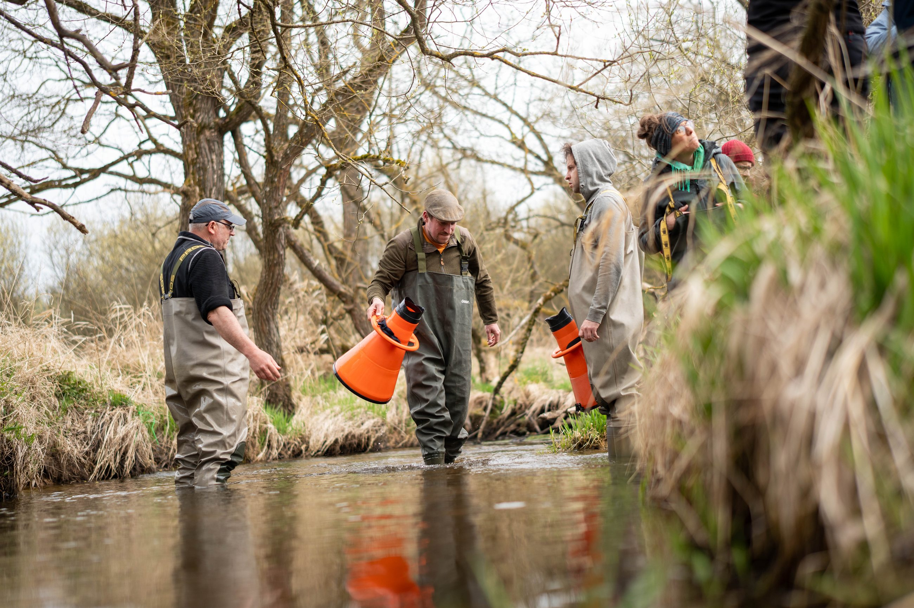
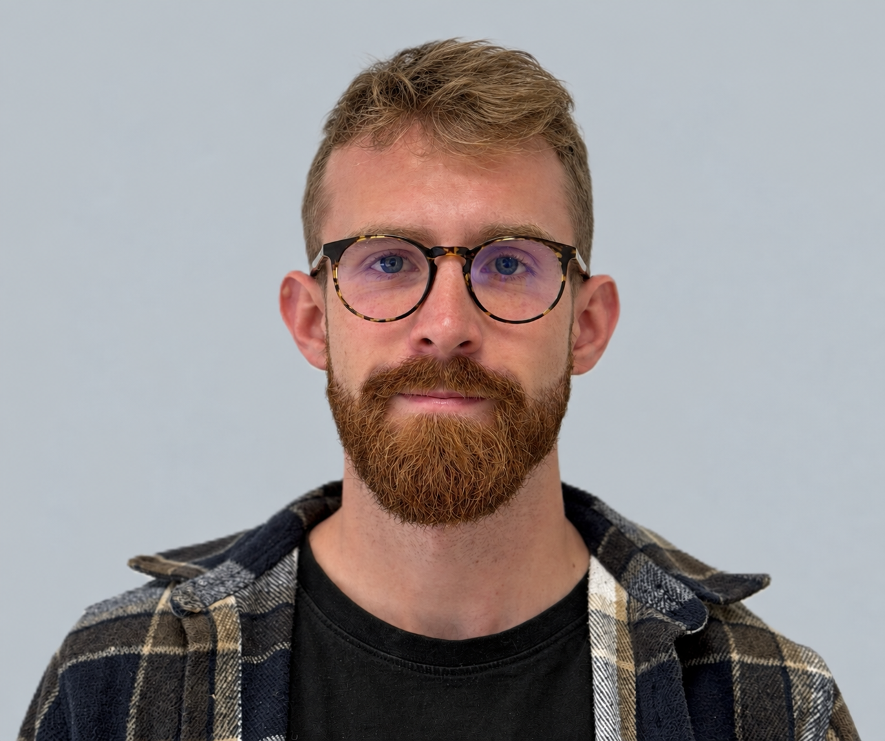
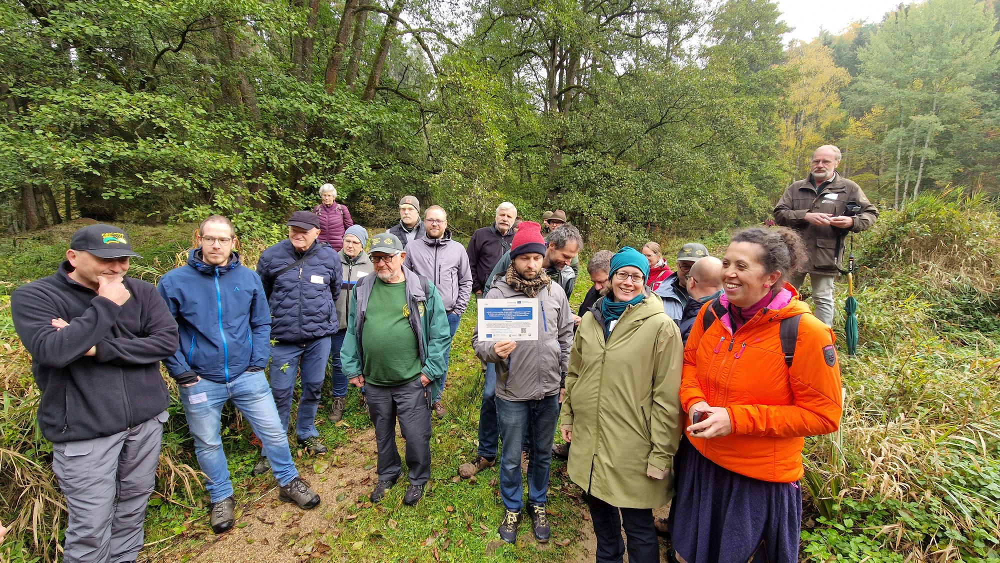
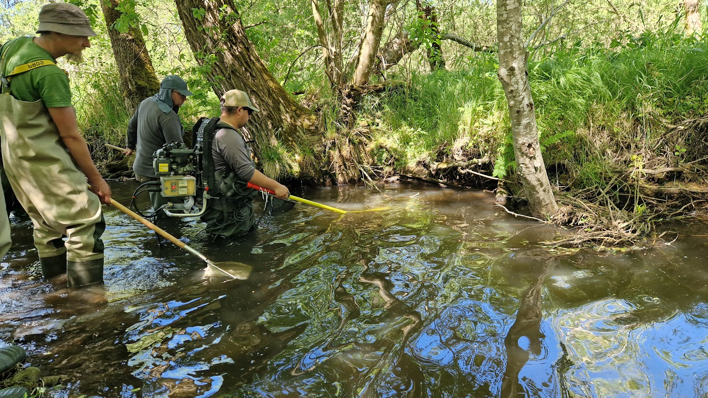
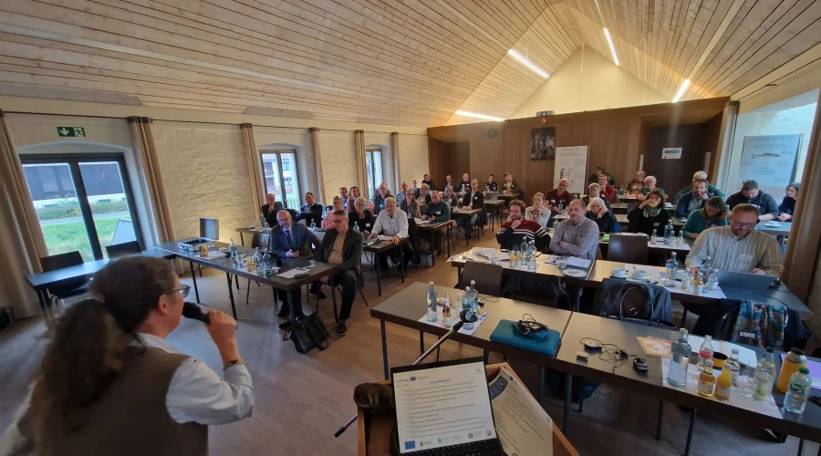

Evropská územní spolupráce
Interreg je iniciativa Evropské unie, která propojuje země, regiony a komunity prostřednictvím programů spolupráce. Podporuje společná řešení výzev, jež překračují hranice.
Oficiální informace Interreg
Dobrovolnický deník · Interreg Volunteer Youth
Osobní zápisky o evropské spolupráci, GLOBALMUS a dobrovolnictví.
Fotografie z dobrovolnického deníku
01Rámec spolupráce
Krátké, ověřené vysvětlení programu a prostoru, ve kterém dobrovolnictví pomáhá propojovat lidi a místa.
Interreg je iniciativa Evropské unie, která propojuje země, regiony a komunity prostřednictvím programů spolupráce. Podporuje společná řešení výzev, jež překračují hranice.
Oficiální informace InterregIVY je iniciativa Evropské komise, v níž mladí lidé podporují solidární aktivity skrze spolupráci. Po boku místních aktérů pomáhají hledat společná řešení.
Oficiální informace IVYDobrovolníci IVY podporují solidární aktivity prostřednictvím spolupráce a společně s místními aktéry hledají řešení výzev, kterým čelí Evropa a sousední regiony.
02O projektu
01
GLOBALMUS is a cross-border project aiming to improve the conservation status of native large freshwater mussels and strengthen aquatic ecosystems in the Czech-Bavarian border region. The project focuses particularly on the freshwater pearl mussel and the thick-shelled river mussel. It investigates the causes of their decline, including habitat conditions, water temperature, environmental pressures and predation. The findings will support the development of practical conservation measures and improved management of river habitats.
02
The project focuses on nature conservation, freshwater biodiversity and water management in the context of global change. Its activities take place in the Czech-Bavarian border region, with particular attention to river ecosystems in the Upper Palatinate and South Bohemia. The project combines environmental monitoring, research and practical conservation activities to improve conditions for freshwater mussels and their associated species.
03
The project brings together organisations from Germany and the Czech Republic:
Together, the partners contribute to cross-border research, habitat conservation, water management and public engagement.
04
GLOBALMUS aims to improve habitats for native freshwater mussels, strengthen aquatic ecosystems and support the long-term conservation of threatened species. Its expected outcomes include better knowledge of the factors affecting mussel populations, practical measures to improve river habitats, and recommendations for the conservation and management of watercourses. The project also promotes environmental awareness and cooperation between Czech and German organisations, local stakeholders and the public.

03Člověk za zápisky
Jsem dobrovolník programu Interreg Volunteer Youth zapojený do projektu GLOBALMUS a v tomto zápisníku sdílím svou zkušenost.
04Moje role v projektu
My role as a volunteer is to help connect people, ideas and organisations across borders. I support communication, share information about the project and help raise awareness of freshwater ecosystems and the importance of protecting aquatic biodiversity. Through outreach and public engagement, I contribute to bringing scientific research closer to local communities and making the project's goals more accessible to a wider audience.
For me, volunteering is also about building bridges between people, encouraging cooperation and showing that protecting nature is a shared responsibility. Even small actions can help create stronger connections between communities and the environment around them.
05Osobní motivace
I joined the volunteering programme because I wanted to step outside my comfort zone, discover new perspectives and contribute to something meaningful. I believe volunteering is a great opportunity to learn by doing, meet people with different backgrounds and become part of a project that brings positive change.
I was especially drawn to the opportunity to connect environmental protection with international cooperation. Freshwater ecosystems are essential for both nature and people, yet their importance is often overlooked. I wanted to help communicate why these ecosystems matter while developing my own skills and gaining experience in an international environment.
For me, this experience is about more than volunteering. It is about exchanging ideas, learning from others, discovering new ways of working together and becoming more aware of how we can contribute to a more sustainable future.
06Akce a terénní aktivity
Setkání projektu a terénní práce zaměřené na sladkovodní ekosystémy.

A conference on large bivalve conservation and fish communities, followed by visits to project sites in the Waldnaab catchment.
Přečíst celý report
Odlovy ryb a mapování jejich přirozené potravní základny pomáhají lépe porozumět vztahům ve sladkovodních ekosystémech.
Přečíst celý report01Report z akce

On 20–21 October 2026, the kick-off conference and accompanying programme for the INTERREG GLOBALMUS project took place in the village of Falkenberg, near the picturesque castle of the same name.
The first day was devoted to presentations on various aspects of the conservation of large bivalves and fish communities. Representing our faculty, Martin Bláha gave a presentation on the monitoring of ichthyofauna in the Blanice river catchment, one of the last remaining sites where the freshwater pearl mussel is found in the Czech Republic. Miloš Buřič spoke about monitoring the signal crayfish population in the Waldnaab stream in Bavaria.
In the Waldnaab, the freshwater pearl mussel still occurs in greater numbers and has a more favourable food supply than at most sites in the Czech Republic. Unfortunately, its host, the brown trout—which is essential for the mussel's reproduction—is in decline here, presumably due to rising summer water temperatures.
Colleagues from BIVALVIA and the Institute of Parasitology of the Czech Academy of Sciences, both project partners, as well as representatives of the Vltava River Basin Authority, also presented their work.
On the second day, participants visited sites in the Waldnaab river catchment, including the Waldnaab itself and the Frombach and Grenzbach streams. These sites are the focus of conservation measures for the freshwater pearl mussel and are also central to the project's activities.
The excursion concluded at the museum of pearl and mother-of-pearl production and processing in the town of Adorf.
We would like to thank the organising team from our project partner, Steinwald Nature Park, for the enjoyable time spent in the castle grounds and out in the field.
02Report z terénní aktivity
Fieldwork is an important part of understanding freshwater ecosystems and the species that inhabit them. During our activities, we carry out fish sampling and investigate macrozoobenthos communities, which represent an important natural food source for fish.
Fish sampling helps us examine fish communities, their species composition and population structure. At the same time, mapping macrozoobenthos provides valuable information about the availability and distribution of natural food resources in aquatic habitats.
By combining information about fish populations and their food base, we can gain a better understanding of ecological relationships within freshwater ecosystems. These activities also help us explore the condition of aquatic habitats and the interactions between different components of the ecosystem.
07Obrazový deník
Galerie zachycuje krajinu a okamžiky spojené s mým dobrovolnickým deníkem.
Popisky fotografií popisují pouze viditelný obsah snímků.